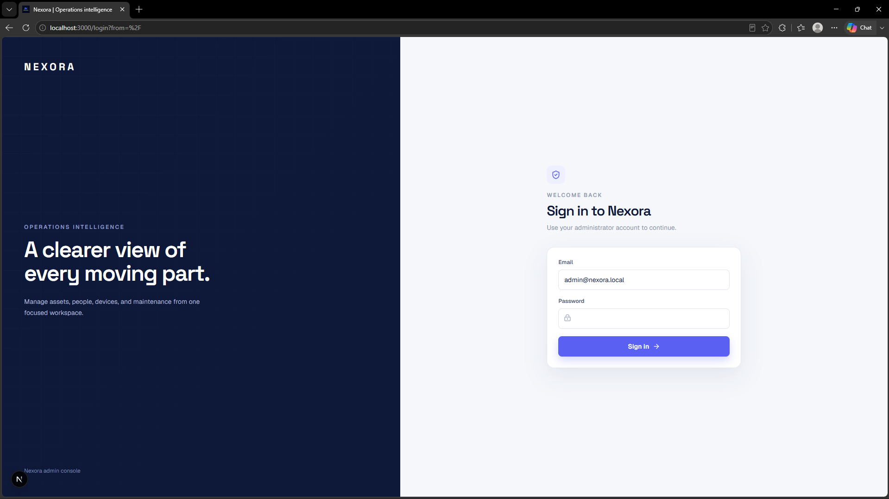
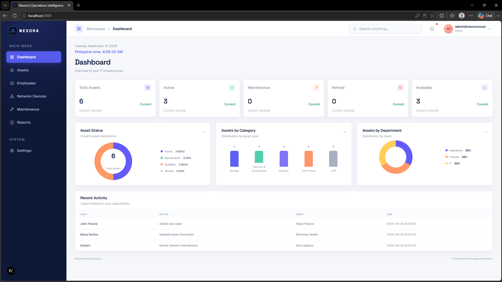
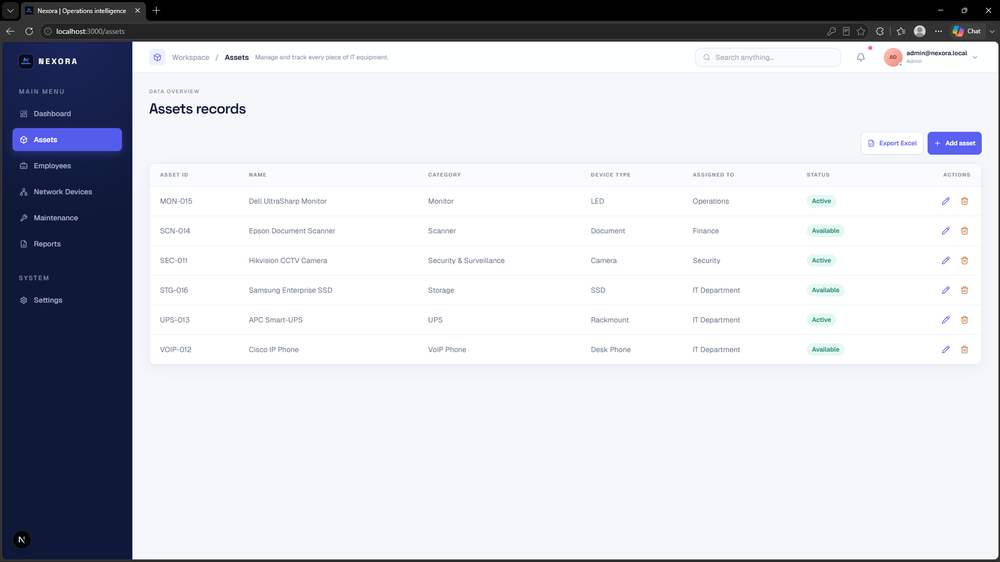
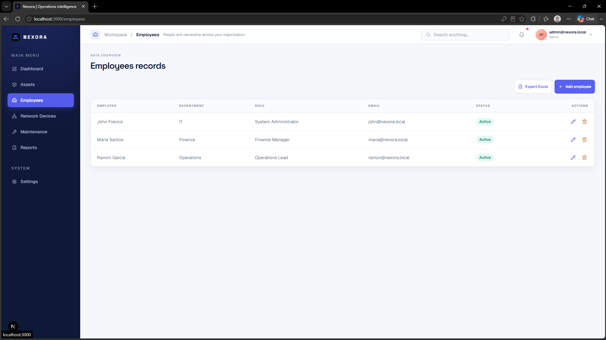
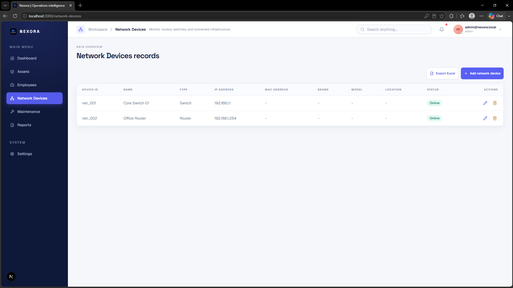
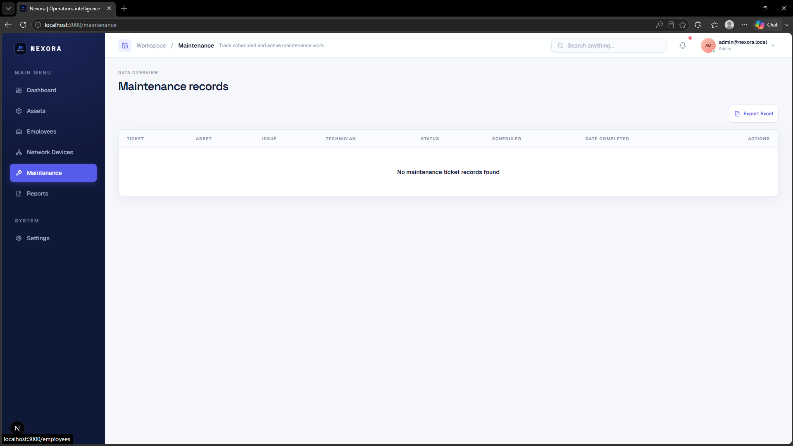
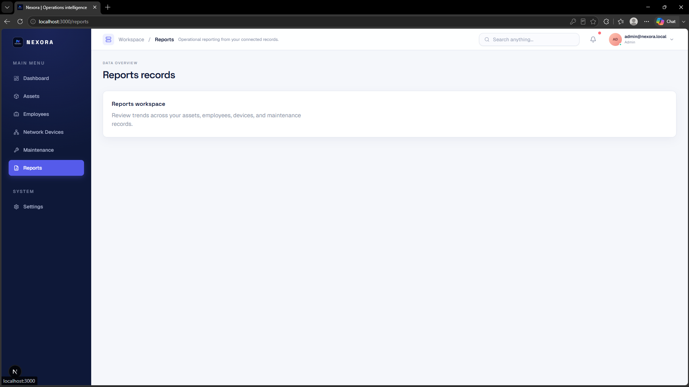
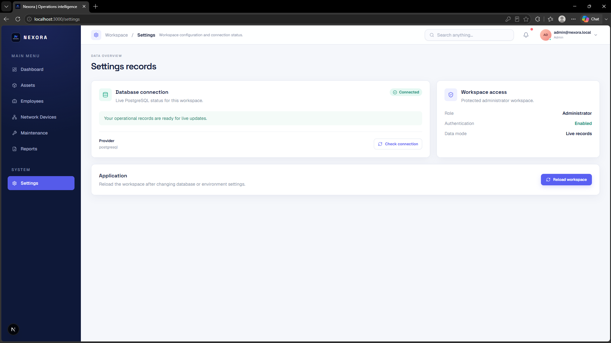

Nexora
Nexora is a full-stack IT infrastructure management dashboard designed to streamline asset tracking, employee records, network inventory, and maintenance workflows in one centralized platform. Built with Next.js, TypeScript, Tailwind CSS, and PostgreSQL, the application provides a secure admin experience with protected login, dashboard analytics, and responsive interfaces for managing operational data efficiently. The project includes features such as asset management with CRUD operations and search, employee and network device tracking, maintenance ticket monitoring, and workspace reporting tools. I developed the full application from the frontend interface to the backend API and database integration, focusing on clean UI design, functional data handling, and a scalable structure suitable for real-world IT operations. The result is a comprehensive management system that demonstrates my ability to build secure, data-driven web applications with modern technologies.
View on GitHub







Select an image to view it larger.